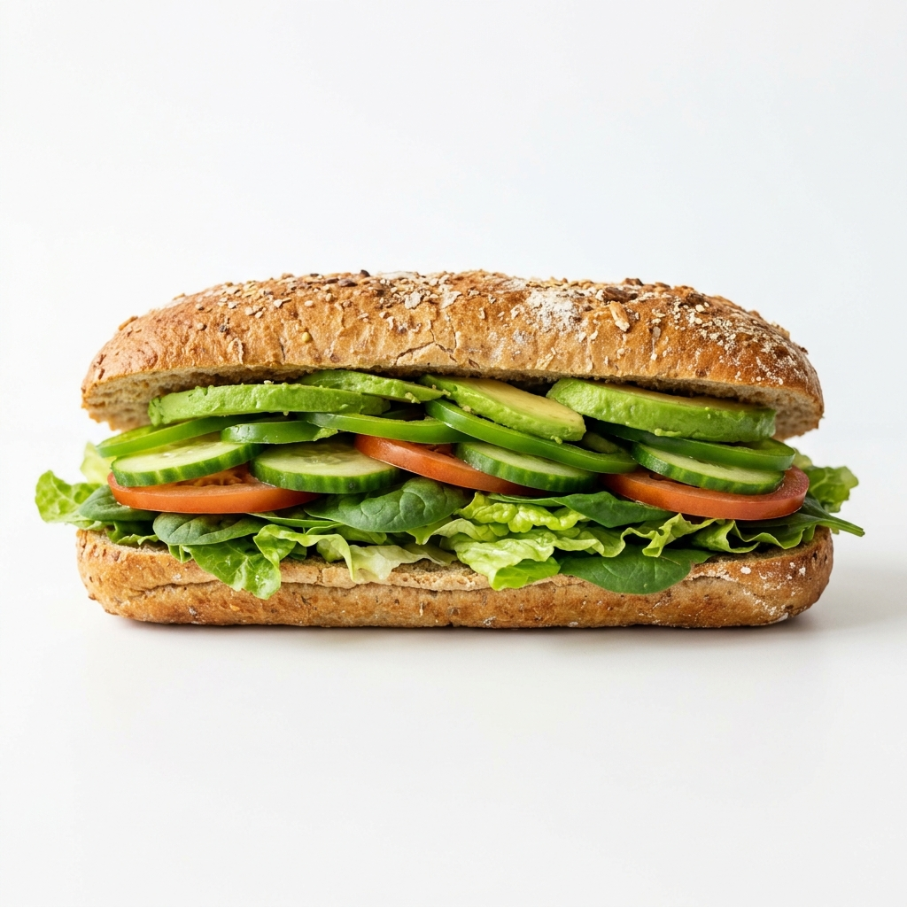
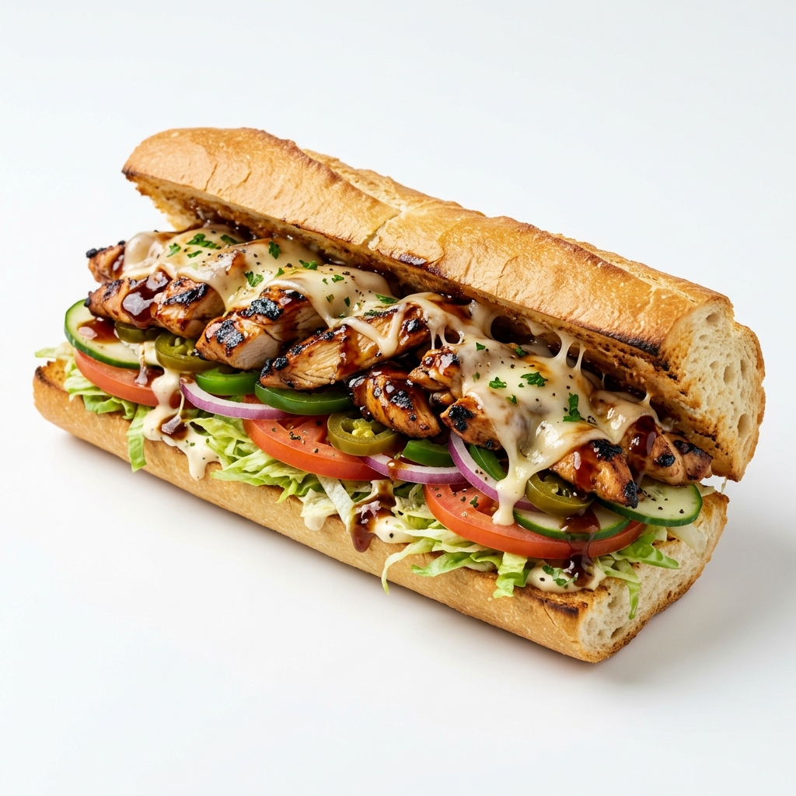
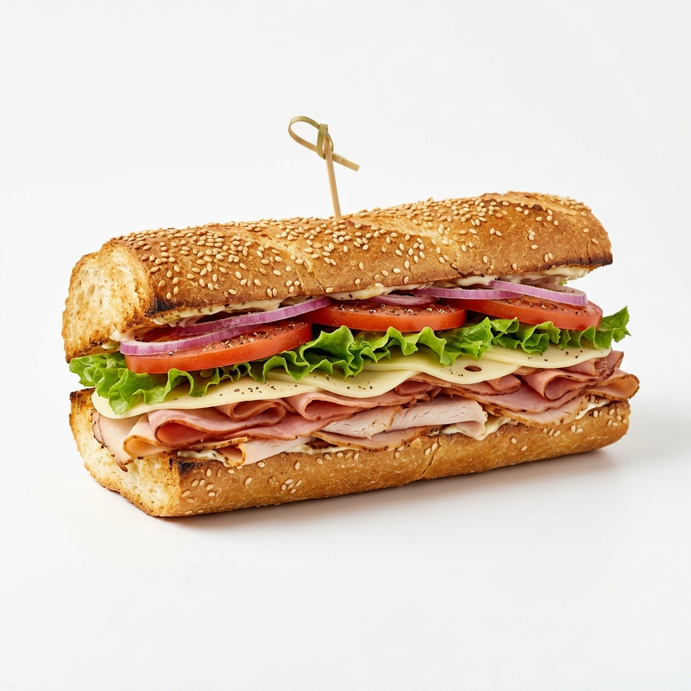

El mercado de Fast Food en Colombia es altamente competitivo. Este dashboard interactivo presenta el análisis de marketing global y local de Subway.

Vegetales cortados diariamente para garantizar la máxima crocancia y frescura en cada mordisco.

Salsas exclusivas y proteínas preparadas bajo estrictos estándares de calidad mundial.

Tú tienes el control absoluto. Millones de combinaciones posibles sobre nuestro pan recién horneado.
Los resultados se actualizarán en tiempo real en nuestro panel de Análisis.
"MCCOMBO DIA 19900 LUN DOM" (McDonald's) lideró inserciones en Autopista Norte (Bogotá).
KFC ("CUBETA POLLO") acaparó Autopista Sur y Av. Boyacá con una inversión de ~$14.2M por valla doble.
Alta recordación visual en la franja "Centro Bogotá", pero Subway gana terreno en digital con experiencias inmersivas.
Estados Unidos se mantiene como el país donde MÁS SE VENDE, con un crecimiento impulsado fuertemente por la renovación a "Subway Series".
La marca ha superado exitosamente antiguas controversias sobre las medidas exactas de sus "Footlongs" (15cm/30cm) e ingredientes del pan, implementando políticas de transparencia total de ingredientes.
Fuerte penetración en el mercado de India y Japón con adaptación masiva de menús vegetarianos y sabores locales (Teriyaki, Paneer).

Basado en las bases de datos de Competencia e Inversión (Offline/Online)
Subway ha dirigido un gran porcentaje de su inversión hacia TV Nacional y Cines para mostrar la "apetitosidad" de los nuevos lanzamientos. A diferencia de KFC que domina en Exteriores, Subway busca la experiencia audiovisual.
Las campañas digitales tienen un ROI más rápido gracias al redireccionamiento directo a las aplicaciones de Delivery (Rappi). La campaña de Subway Series es el eje principal de la estrategia digital.
Noticias de: lac.newsroom.subway.com
¿Quién está capturando la atención del consumidor colombiano?
McDonald's domina el volumen absoluto de búsquedas. Subway tiene un share estable pero bajo. Starbucks muestra picos estacionales. KFC tiene presencia constante pero sin dominio. Las semanas donde Subway sube indican alta correlación con su inversión publicitaria.
"Si sabemos quién captura la atención, debemos entender qué inversión está detrás de esa atención."
¿Cuánto y dónde está invirtiendo cada marca?
McDonald's tiene una brecha enorme entre su inversión y la de Subway. Subway concentra su inversión digital en Facebook/Instagram. KFC tiene mayor presencia en exterior. La burbuja de Subway debe verse pequeña en inversión pero con un Share of Search no proporcional a esa desventaja, lo que indica eficiencia relativa.
"Conocemos la inversión. Ahora debemos medir su impacto: ¿qué tanto genera cada peso invertido en atención del consumidor?"
¿Qué variables generan impacto real en el interés por Subway?
La inversión digital de Subway tiene un efecto positivo y significativo sobre el Share of Search. La presión competitiva de McDonald's tiene efecto negativo. Nuestro modelo de predicción explica la gran mayoría de las variaciones del índice de Subway.
"El modelo nos dice qué funciona. Ahora debemos simular qué pasaría si redistribuimos la inversión."
¿Dónde está Subway en el mapa competitivo y qué espacio puede apropiarse?
Subway tiene campañas de producto y app pero sin una narrativa de posicionamiento consistente. El espacio de "healthy convenience" está disponible y no lo ocupa ningún competidor fuerte.
"Sabemos dónde está cada marca y dónde puede ir Subway. Ahora debemos simular qué pasaría si Subway mueve su inversión para capturar ese espacio."
¿Cómo cambia el Share of Search de Subway si redistribuimos la inversión?
Hay un punto óptimo de inversión digital donde el retorno marginal empieza a caer. Un aumento del 30% en digital genera más retorno que cualquier otro escenario. La presión competitiva de McDonald's requiere una respuesta de inversión desproporcionada para neutralizarse.
"Los escenarios muestran qué hacer con el presupuesto. Las conclusiones integran todo en un sistema de decisión."
¿Qué debe hacer Subway?
El canal digital genera el mayor retorno marginal para Subway pero muestra riesgo de saturación rápida. Debe incrementarse hasta el punto óptimo del +30%.
Subway debe apropiarse urgentemente del espacio "Healthy Convenience" en digital, diferenciándose de la indulgencia masiva de McDonald's y KFC.
El ROI digital estimado de Subway supera en eficiencia marginal a McDonald's, compensando el menor presupuesto mediante un enfoque muy segmentado en Social Media.
Una escalada publicitaria de McDonald's puede opacar a Subway fácilmente. La respuesta no es gastar más, sino cambiar el posicionamiento hacia donde McDonald's no puede competir.
Redirigir recursos hacia plataformas de video y formatos interactivos (Subway Series) para contrarrestar el alcance masivo tradicional de KFC y McDonald's.
Posicionarnos como la alternativa audaz. Más sabor, más opciones, diseño vibrante.
Usar visuales apetitosos (Food Porn) en todos los touchpoints digitales, como el sándwich del video principal.
SOCIAL LISTENING (SUBWAY)
Haz click en los íconos para ver el análisis detallado por red social de la marca.
Selecciona una red social
Interacciones Totales
-Likes Promedio / Post
-Sentimiento
-Enfoque Estratégico
-Búsquedas Específicas de la Marca (Google Trends)